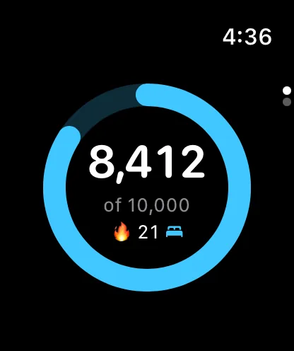
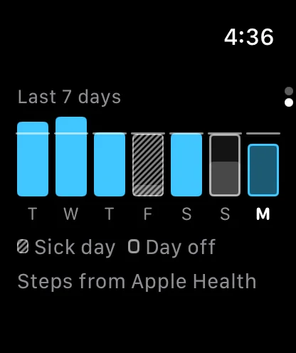
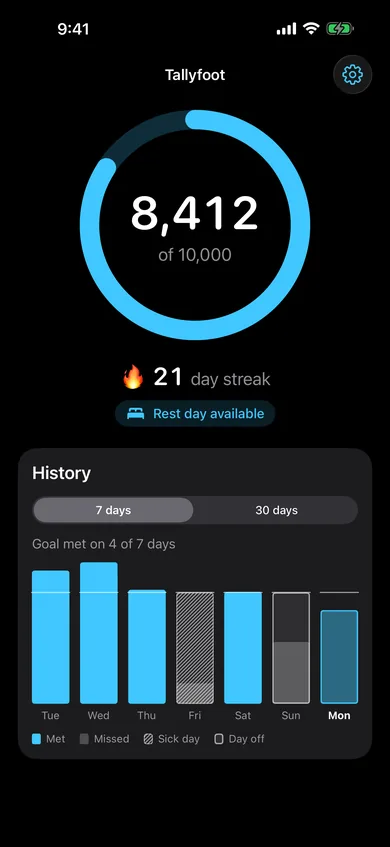
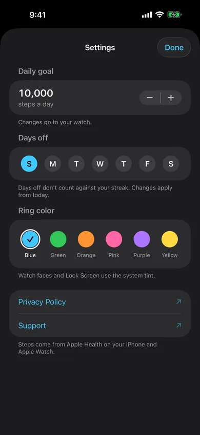
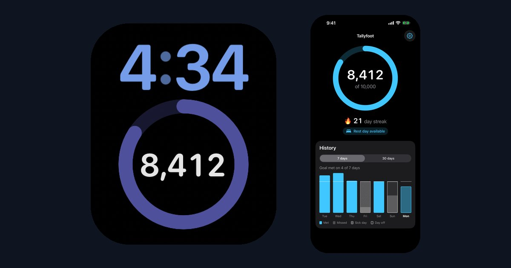

Tallyfoot press kit
Fact sheet, high-resolution device captures, and app icon for editorial coverage. Every screenshot below is a real capture with no invented frames.
Fact sheet
- App name
- Tallyfoot: Step Counter
- Developer
- Jeremy Daughhetee (independent developer)
- Platforms
- Apple Watch (watchOS) and iPhone (iOS); works on iPhone alone too
- Price
- Free — no accounts, no ads, no tracking, no in-app purchases
- Category
- Health & Fitness
- Release
- 1.0 launched November 6, 2026; 1.1.1 updated November 23, 2026
- Privacy
- Reads steps from Apple Health and device motion sensors; syncs only between the user's own iPhone and Apple Watch via WatchConnectivity; makes zero network requests
- Website
- tallyfoot.com
About Tallyfoot
Tallyfoot puts a daily step goal ring directly on an Apple Watch face. The ring fills as you walk, with your step count in the center, and works as a complication on compatible faces such as Modular Duo and X-Large as well as iPhone Home Screen and Lock Screen widgets.
Instead of breaking streaks on sick days or rest days, Tallyfoot builds room for real life into its streak rules: six goal days in a row earn one banked rest day that automatically protects a missed day, users can mark a sick day on any of the last 7 days, and weekly days off can be configured in Settings. On first launch, Tallyfoot reads Apple Health to pick up an existing streak automatically, and history (7 days on Apple Watch, 7 or 30 days on iPhone) measures each past day against that day's goal.
Screenshots and icon
Click any label to download the full-resolution PNG or JPG, or grab everything in tallyfoot-press-kit.zip.












